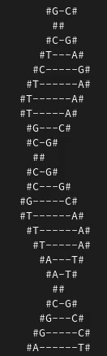

17. ДНК.
Условие:
Сделать визуализацию ДНК.
Пример программы:

Код:
import random, sys, time, bext
# КОНСТАНТЫ
ROWS = [
' ##',
' #{}-{}#',
' #{}---{}#',
' #{}-----{}#',
' #{}------{}#',
' #{}------{}#',
' #{}-----{}#',
' #{}---{}#',
' #{}-{}#',
' ##',
' #{}-{}#',
' #{}---{}#',
' #{}-----{}#',
' #{}------{}#',
' #{}------{}#',
' #{}-----{}#',
' #{}---{}#',
' #{}-{}#']
try:
bext.clear()
print('Нажмите <Ctrl-C> для выхода...\n')
time.sleep(0.5)
rowIndex = -1 # в дальнейшем каунтер исправит это значение и сделает его годным для индексов
while True:
rowIndex = rowIndex + 1
if rowIndex == len(ROWS):
rowIndex = 0
if rowIndex == 0 or rowIndex == 9:
print(ROWS[rowIndex])
continue
randomSelection = random.randint(1, 4)
if randomSelection == 1:
leftNucleotide, rightNucleotide = 'A', 'T'
elif randomSelection == 2:
leftNucleotide, rightNucleotide = 'T', 'A'
elif randomSelection == 3:
leftNucleotide, rightNucleotide = 'C', 'G'
elif randomSelection == 4:
leftNucleotide, rightNucleotide = 'G', 'C'
print(ROWS[rowIndex].format(leftNucleotide, rightNucleotide))
time.sleep(0.1)
except KeyboardInterrupt:
sys.exit()